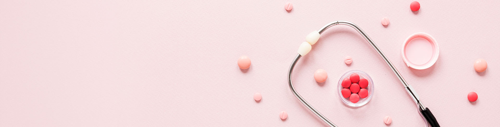
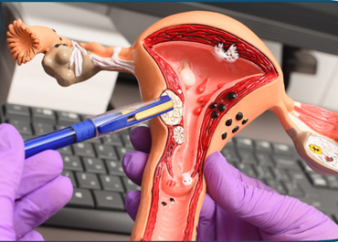

"Geçmişte hastalarımızın en çok çekindiği metal aletli ağrılı rahim filmleri artık geride kaldı. İnce kateter ve modern görüntüleme teknikleriyle HSG yalnızca 5-10 dakikalık konforlu bir işlemdir."

AĞRISIZ HSG (RAHİM FİLMİ)

Adana Ağrısız HSG (Rahim Filmi): Tüplerin Açıklığı ve Rahim İçi Değerlendirmesi
Kısa Özet ve Klinik Bilgiler
Yeni nesil ağrısız HSG (rahim filmi), adetin bitiminden sonraki 6-11. günler arasında ince yumuşak kateter ve su bazlı kontrast sıvı ile fallop tüplerinin açıklığını ve rahim boşluğunu değerlendirir. İsteğe bağlı sedasyonla 5-10 dakikada tamamlanır ve aynı ay gebelik planlanabilir.
- Uzman Hekim: Op. Dr. Hülya Yetiş Sucu (Özel Klinik Çukurova/Adana)
- Zamanlama: Adet bitimi sonrası, döngünün 6–11. günleri arası
- İşlem Konforu: İnce yumuşak kateter ve isteğe bağlı hafif sedasyon ile 5–10 dakika
- Gebelik Planı: İşlem sonrası tüplerdeki mukus tıkaçları açılabilir; aynı ay gebelik önerilir
HSG (Histerosalpingografi), halk arasında bilinen adıyla rahim filmi; rahim boşluğunun yapısını ve yumurtalıklarla rahmi birbirine bağlayan fallop tüplerinin açık olup olmadığını değerlendiren en temel tanı yöntemidir. Adana'da infertilite araştırması, aşılama veya tüp bebek planlaması öncesinde Op. Dr. Hülya Yetiş Sucu tarafından yeni nesil, konforlu ve ağrısız tekniklerle HSG planlaması yapılmaktadır.
HSG Kimlere ve Neden Çekilir?
- Korunmasız düzenli ilişkiye rağmen gebelik elde edemeyen çiftlerde tüplerin açıklığını test etmek için,
- Aşılama (IUI) tedavisine başlamadan önce en az bir tüpün açık olduğundan emin olmak için,
- Rahim perdesi (septum), çift rahim, yapışıklık, polip veya miyom gibi anatomik sorunları saptamak için,
- Geçirilmiş dış gebelik veya pelvik enfeksiyon sonrası tüplerdeki hasarı değerlendirmek için çekilir.
İşlem Öncesi ve Sonrası Süreç
Çekim öncesi aktif vajinal enfeksiyon olmamasına dikkat edilir ve gerekirse önleyici tek doz antibiyotik planlanır. İnce kateter aracılığıyla verilen sıvının rahim ve tüplerden geçişi dijital röntgen cihazıyla izlenir. İşlem sonrasında hastalarımız hemen günlük aktivitelerine dönebilir; aynı ay içinde korunmaya gerek kalmadan gebelik planlanabilir.
Adana HSG (Rahim Filmi) Planlama ve Randevu
Çocuk sahibi olma sürecinde veya tekrarlayan düşüklerin araştırılmasında ağrısız HSG planlaması için bize ulaşabilirsiniz. Muayenelerimiz Özel Klinik — Güzelyalı Mah. 81157 Sk. No2 Gülay Apt. Kat 1 Daire 1 Çukurova/Adana adresinde randevu ile gerçekleştirilmektedir.
İlgili Rehberler: Kısırlık & İnfertilite | Histeroskopi & Polip | Adana Gebelik Takibi
Sıkça Sorulan Sorular
Soru: HSG (rahim filmi) adet döngüsünün hangi günlerinde çekilir?
HSG çekimi adet kanamasının tamamen bittiği günden yumurtlama dönemine kadar olan aralıkta, genellikle adetin 6. ile 11. günleri arasında yapılır. Böylece hem olası bir erken gebeliğe zarar verilmez hem de rahim içi net görüntülenir.
Soru: Yeni nesil HSG gerçekten ağrısız mıdır?
Eski metal kanüllerin aksine günümüzde ince, yumuşak balonlu kateterler ve vücutla uyumlu su bazlı kontrast sıvılar kullanılmaktadır. Ayrıca hassasiyeti veya kaygısı yüksek hastalarımızda hafif sedasyon anestezisi ile tamamen ağrısız çekim yapılabilmektedir.
Soru: HSG çekildikten sonra kendiliğinden hamile kalma şansı artar mı?
Evet. Kontrast sıvının tüplerden geçerken oluşturduğu nazik basınç, tüplerdeki hafif mukus tıkaçlarını temizleyebildiği için HSG çekimini takip eden ilk 3 ayda kendiliğinden gebelik oranlarında artış gözlemlenmektedir.